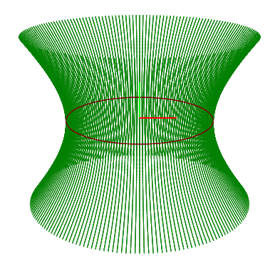
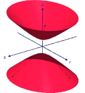

| Choisissez votre langue ! | Choose your language ! |
On considère dans le plan y=0 l'hyperbole équilatère d'équation xz=1.
On fait tourner cette courbe successivement :
- Autour d'une de ces asymptotes, l'axe Oz
- Autour d'un de ses axes de symétrie, la droite de vecteur directeur \( \displaystyle -\overrightarrow{i}+\overrightarrow{k} \)
- Autour de son axe focal la droite de vecteur directeur \( \displaystyle \overrightarrow{i}+\overrightarrow{k} \)
Programmez également une représentation graphique de chacune de ces 3 surfaces de révolution avec un logiciel graphique spécialisé en 3D ou en écrivant un programme avec un langage de votre choix.
aide
On traitera à chaque fois le problème dans un repère où l'axe de rotation est l'axe Oz.
Pour le premier cas on peut prendre comme paramétrage de l'hyperbole dans le plan y=0 :
x=t
y=1/t
avec t ∈ ]0,+∞[ et t ∈ ]-∞,0[ Pour le second cas on peut prendre :
x=cosh(t)
z=sinh(t)
avec t ∈ ℝ
Pour le troisième cas on peut prendre :
x=sinh(t)
z=cosh(t)
conjointement avec :
x=sinh(t)
z=-cosh(t)
avec t ∈ ℝ
Dans chacun des 3 cas la matrice de la rotation d'angle θ autour de l'axe Oz est
\( \displaystyle \begin{pmatrix} {\cos(\theta)} & {- \sin(\theta)} & 0 \\ {\sin(\theta)} & {\cos(\theta)} & 0 \\ 0 & 0 & 1 \\ \end{pmatrix} \)
solution
Premier cas
On obtient la représentation paramétrique :\( \displaystyle \left\{ \begin{matrix} {x\left( {t,\theta} \right) = t\cos(\theta)} \\ {y\left( {t,\theta} \right) = t\sin(\theta)} \\ {z\left( {t,\theta} \right) = \frac{1}{t}} \\ \end{matrix} \right. \)
qui donne immédiatemment l'équation cartésienne :\( \displaystyle x^{2} + y^{2} = \frac{1}{z^{2}} \) (dans le repère d'origine)
Second cas
Avec le paramétrage suggéré dans l'aide, on obtient la représentation paramétrique :\( \displaystyle \left\{ \begin{matrix} {x\left( {t,\theta} \right) = \cosh(t)\cos(\theta)} \\ {y\left( {t,\theta} \right) = \cosh(t)\sin(\theta)} \\ {z\left( {t,\theta} \right) = \sinh(t)} \\ \end{matrix} \right. \)
Qui donne l'équation cartésienne :x2+y2-z2=1 (dans le repère modifié)
Nous avons ici un 'hyperboloïde à une nappe' . L'appliquette qui suit vous permet de voir la surface de révolution générée.
La figure s'appelle 'Trompette de Gabriel' d'après Evangelista Torricelli.
Voici l'image :
Troisième cas
Avec le paramétrage suggéré, on obtient la représentation paramétrique :\( \displaystyle \left\{ \begin{matrix} {x\left( {t,\theta} \right) = \sinh(t)\cos(\theta)} \\ {y\left( {t,\theta} \right) = \sinh(t)\cos(\theta)} \\ {z\left( {t,\theta} \right) = \pm \cosh(t)} \\ \end{matrix} \right. \)
Qui donne encore l'équation cartésienne :x2+y2-z2=1 (dans un repère distinct du précédent et distinct du repère d'origine)
Dans ce cas l'axe de rotation est le second axe de symétrie de la figure.
Génération de cet hyperboloïde (dit à deux nappes).
Voici l' image :
courtesy :https://download.tuxfamily.org/texgraph/quadriques/quadriques.html
We consider in the plane y=0 the equilateral hyperbola with equation xz=1.
We rotate this curve successively:
- Around one of these asymptotes, the Oz axis
- Around one of its axes of symmetry, the direction vector line \( \displaystyle -\overrightarrow{i}+\overrightarrow{k} \)
- Around its focal axis the direction vector line \( \displaystyle \overrightarrow{i}+\overrightarrow{k} \)
Also program a graphical representation of each of these 3 surfaces of revolution with specialized 3D graphics software or by writing a program with a language of your choice.
hint
We will deal each time with the problem in a frame where the axis of rotation is the Oz axis.
For the first case we can take as parameterization of the hyperbola in the plane y=0:
x=t
y=1/t
with t ∈ ]0,+∞[ and t ∈ ]-∞,0[ For the second case we can take:
x=cosh(t)
z=sinh(t)
with t ∈ ℝ
For the third case we can take:
x=sinh(t)
z=cosh(t)
in conjunction with:
x=sinh(t)
z=-cosh(t)
with t ∈ ℝ
In each of the 3 cases the matrix of the angle rotation θ around the Oz axis is
\( \displaystyle \begin{pmatrix} {\cos(\theta)} & {- \sin(\theta)} & 0 \\ {\sin(\theta)} & {\cos(\theta)} & 0 \\ 0 & 0 & 1 \\ \end{pmatrix} \)
solution
First case
We get the parametric representation:\( \displaystyle \left\{ \begin{matrix} {x\left( {t,\theta} \right) = t\cos(\theta)} \\ {y\left( {t,\theta} \right) = t\sin(\theta)} \\ {z\left( {t,\theta} \right) = \frac{1}{t}} \\ \end{matrix} \right. \)
which immediately gives the Cartesian equation:\( \displaystyle x^{2} + y^{2} = \frac{1}{z^{2}} \) (in the original frame)
Second case
With the configuration suggested in the help, we obtain the parametric representation:\( \displaystyle \left\{ \begin{matrix} {x\left( {t,\theta} \right) = \cosh(t)\cos(\theta)} \\ {y\left( {t,\theta} \right) = \cosh(t)\sin(\theta)} \\ {z\left( {t,\theta} \right) = \sinh(t)} \\ \end{matrix} \right. \)
Which gives the Cartesian equation:x2+y2-z2=1 (in modified frame)
Here we have a 'one-sheeted hyperboloid' . The following applet allows you to see the generated surface of revolution.
The figure is called 'Trumpet of Gabriel' after Evangelista Torricelli.
Here is the image :
Third case
With the suggested parameterization, we obtain the parametric representation:\( \displaystyle \left\{ \begin{matrix} {x\left( {t,\theta} \right) = \sinh(t)\cos(\theta)} \\ {y\left( {t,\theta} \right) = \sinh(t)\cos(\theta)} \\ {z\left( {t,\theta} \right) = \pm \cosh(t)} \\ \end{matrix} \right. \)
Which again gives the Cartesian equation:x2+y2-z2=1 (in a marker separate from the previous one and separate from the original marker)
In this case the axis of rotation is the second axis of symmetry of the figure.
Generation of this hyperboloid (known as two sheeted).
Here is the image :
courtesy :https://download.tuxfamily.org/texgraph/quadriques/quadriques.html
|
Création Gilles Dubois - licence CC-BY-SA
Created by Gilles Dubois - licence CC-BY-SA
|
Septembre 2023
September 2023
|
Version mobile Jquery
Mobile Jquery version
|
|